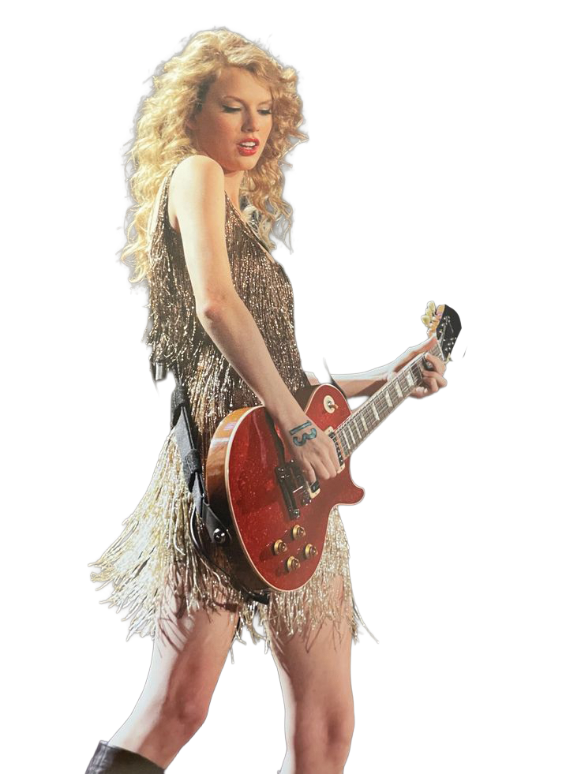

Del Disco
a las plataformas
Durante los años 2010, la industria musical experimentó una transformación profunda gracias al crecimiento de Internet, los teléfonos inteligentes y las plataformas digitales. El pop incorporó cada vez más elementos de la música electrónica, el hip-hop y el R&B, mientras el reguetón pasó de dominar las fiestas y emisoras latinas a conquistar las listas internacionales.
Artistas como Taylor Swift, Drake, Justin Bieber y J Balvin representaron distintas facetas de una década en la que los géneros comenzaron a mezclarse con mayor libertad y las colaboraciones internacionales se hicieron habituales.
Uno de los cambios más importantes fue la transición de la compra de discos y canciones hacia el consumo mediante streaming. Servicios como Spotify y Apple Music permitieron acceder a millones de canciones desde cualquier lugar, modificando los hábitos de escucha y la forma en que se distribuía la música. Las redes sociales y YouTube también adquirieron mayor protagonismo en la promoción de lanzamientos y en la relación entre artistas y seguidores. Al mismo tiempo, el crecimiento del K-pop y el éxito mundial de canciones en español demostraron que la música podía superar las barreras del idioma y llegar a públicos de todo el planeta.
Spotify y Apple Music transformaron la forma de escuchar y descubrir canciones.


.jpeg)
.jpeg)